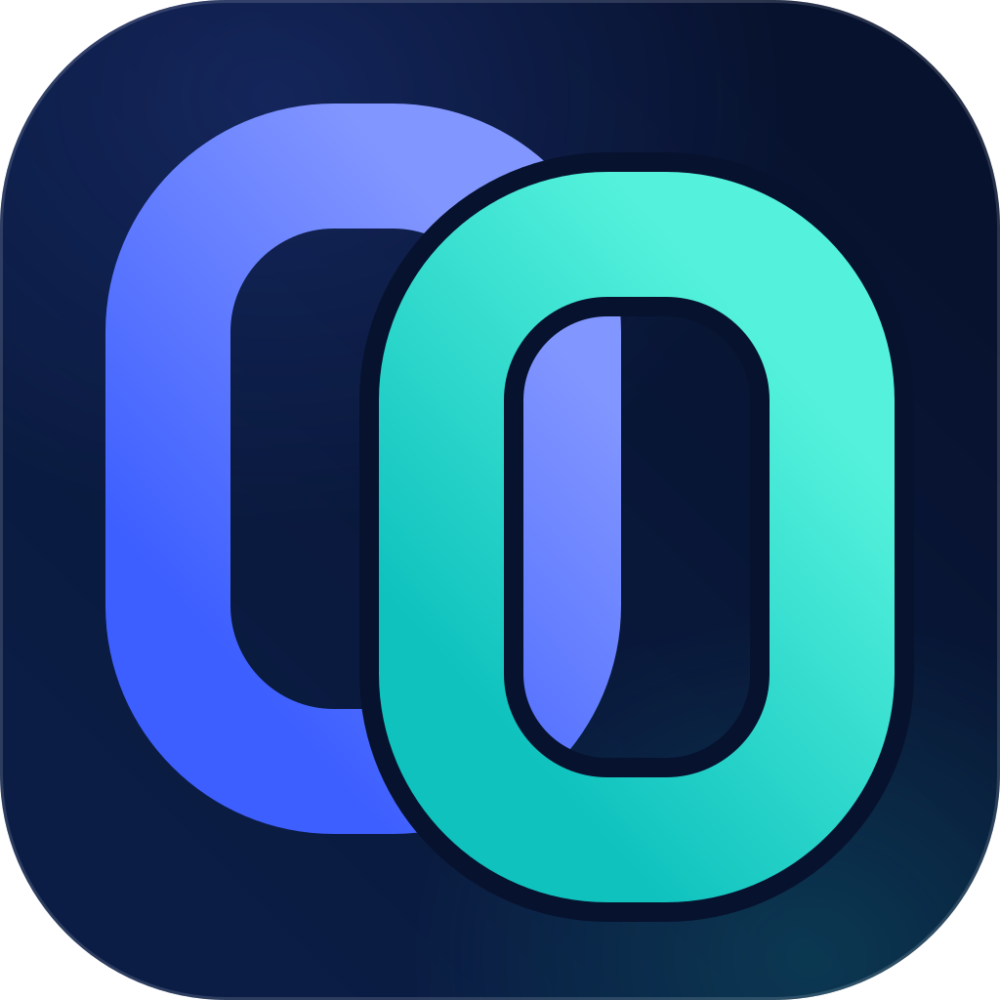
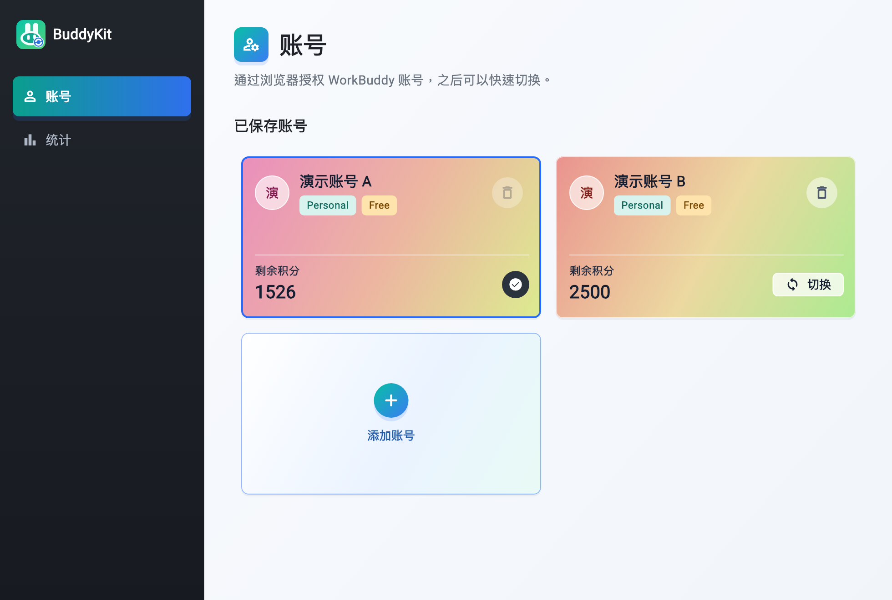
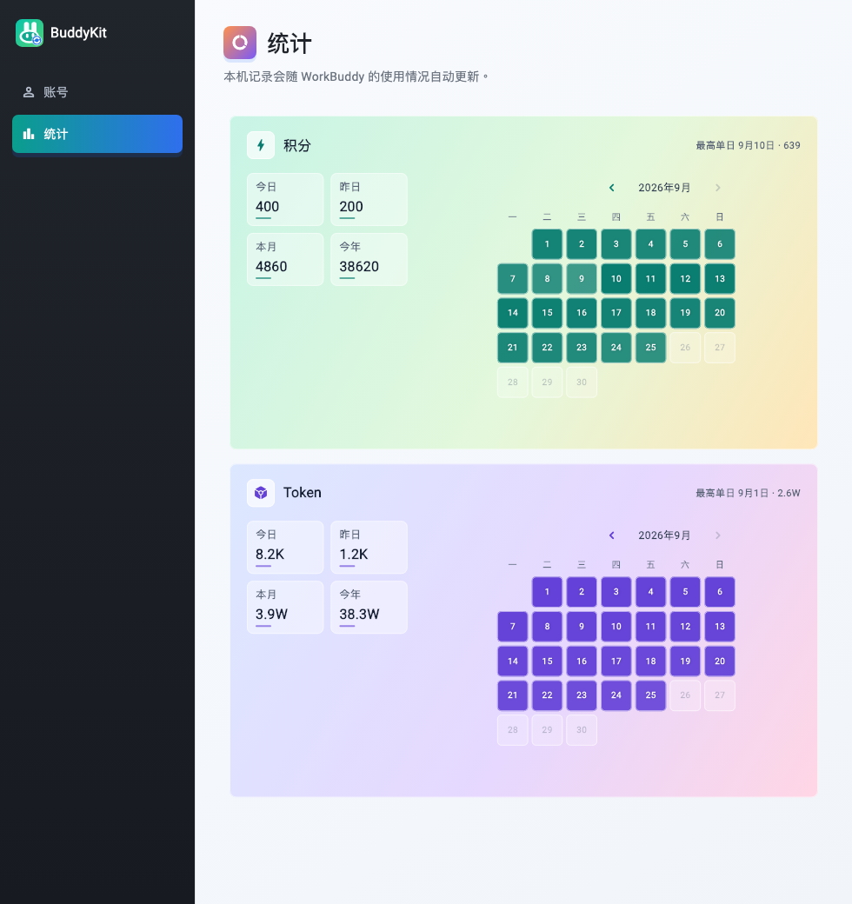

01 / ACCOUNT SWITCHING
账号卡片，一眼识别
昵称、账号类型、订阅类型和剩余积分都来自 WorkBuddy 当前数据。卡片配色按账号固定，下次启动仍然保持一致。

BuddyKitWORKBUDDY DESKTOP COMPANION
保存多个 WorkBuddy 登录状态，点击账号卡片切换，每天自动领取加油站积分。只同步未删除、未归档的活跃本地任务，云端会话保持不动。
本地运行，不启动本地服务

浏览器 OAuth 授权、账号卡片、本地会话归属和用量统计，加上每日积分自动领取。关闭窗口后继续在后台运行；明确退出 BuddyKit 后停止领取。
昵称、账号类型、订阅类型和剩余积分都来自 WorkBuddy 当前数据。卡片配色按账号固定，下次启动仍然保持一致。
空闲时保持 WorkBuddy 运行；有运行任务时强制关闭，切换后重开。活跃本地会话的置顶、顺序与分组一并保留，已删除、归档及云端会话不迁移。
账号卡片的剩余积分每秒刷新。每日看板展示真实的积分和 Token 用量，可悬浮查看某一天的精确数量，并支持切换月份。
点击“添加账号”后唤起 WorkBuddy 官方授权页。验证完成，BuddyKit 读取账号信息并生成卡片，不需要手动输入账号名。
按北京时间 07:00–09:00 为每个已授权账号分别随机安排每日领取，卡片展示下次签到时间；休眠或离线后延后补领，无需切换 WorkBuddy。
点击红色关闭按钮后隐藏到后台，可从菜单栏、系统托盘或 macOS Dock 重新打开。选择“退出 BuddyKit”后停止领取，不创建系统任务，也不开机自启。
截图直接由 BuddyKit 桌面程序使用的 Flutter 页面渲染，未另绘界面。账号和用量为演示数据，不展示私人信息。

账号快照在本地以 AES-GCM 加密保存。BuddyKit 不使用系统钥匙串，不启动本地服务，不上传账号列表；通过 WorkBuddy 官方页面授权，并使用官方接口查询与领取积分。
前往 WorkBuddy 官网 ↗本地会话原地更新归属，云端内容保持不动。
密钥存于 BuddyKit 私有应用数据目录。
有运行任务时，退出 WorkBuddy 后切换并重开。
BuddyKit 是我个人编写的一个 demo，用于自己的学习与技术研究，不以任何形式盈利：不销售、不收费、不投放广告，也没有付费版本、商业授权或任何形式的变现。
功能实现所依赖的第三方组件、接口与文档，均来自公开可获取的库和公开资料；本项目不包含、也不分发任何非公开的代码、数据或凭据。请仅用于个人学习与研究，不要用于商业用途。
本项目为个人作品，与 WorkBuddy 官方及其关联方没有隶属、代理或背书关系；文中出现的产品名称与商标归各自权利人所有。使用本工具产生的结果与风险由使用者自行承担，并请遵守相关服务的使用条款。